Assignment 2: Fun with Filters and Frequencies
Spatial Filtering, Edge Detection, Hybrid Images, and Multiresolution Spline Blending
Project Overview & Goal
Images can be fundamentally analyzed and manipulated through spatial filtering and frequency decomposition. High frequencies represent fine details and sharp edges, while low frequencies capture smooth transitions and broad structures.
In this project, I implemented key spatial and frequency domain algorithms from scratch:
- Part 1: Custom 2D convolution, finite difference operators, derivative of Gaussian (DoG) edge detectors, and image orientation fields.
- Part 2: Unsharp masking, hybrid images via high/low-pass filtering, and Burt & Adelson multiresolution spline blending using Gaussian and Laplacian stacks.
Part 1.1: Convolutions from Scratch & Finite Differences
I implemented custom 2D spatial convolution algorithms from scratch using both 4-nested loops (iterating over every pixel and kernel location) and 2-nested vectorized loops.
Runtime Benchmarks & VerificationEvaluating a 9x9 box filter on a downsampled grayscale selfie yielded the following performance metrics:
- 4-Loop Implementation: High overhead due to nested scalar loops.
- 2-Loop Implementation: Substantially faster via vectorized slice operations.
- SciPy
convolve2d: C-optimized baseline runtime. - Numerical Verification: Maximum absolute difference between custom 2-loop convolution and SciPy baseline:
0.00e+00(exact numerical match).
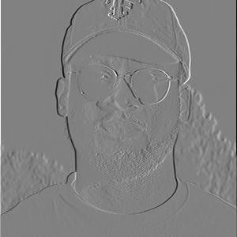
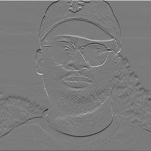
Part 1.2: Finite Difference Operator & Edge Detection
To detect structural boundaries on the standard cameraman.png image, partial derivatives \(I_x\) and \(I_y\) were computed using 1D finite difference filters:
$$I_x = I * D_x, \quad I_y = I * D_y$$
The total edge strength is given by the gradient magnitude \(M\):
$$M = \sqrt{I_x^2 + I_y^2}$$
Thresholding \(M\) at \(T = 0.25\) generates a binary edge map. However, because finite differences act as high-pass filters, noise and fine texture details (such as grass blades) trigger spurious edge responses.
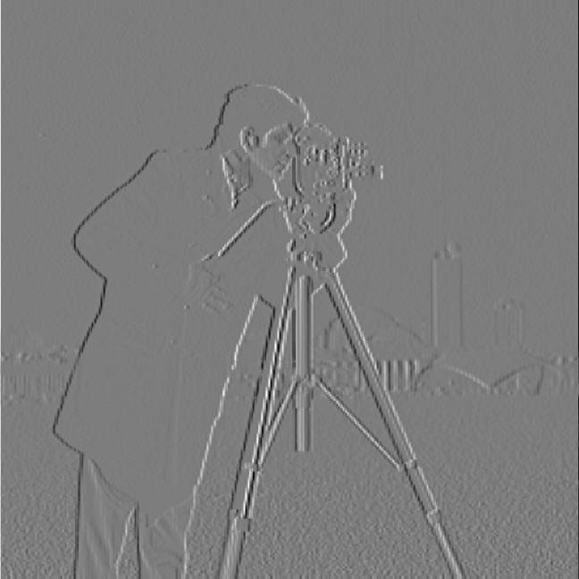
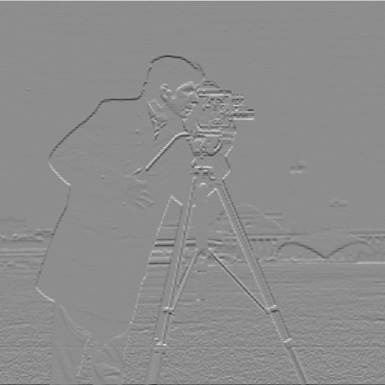
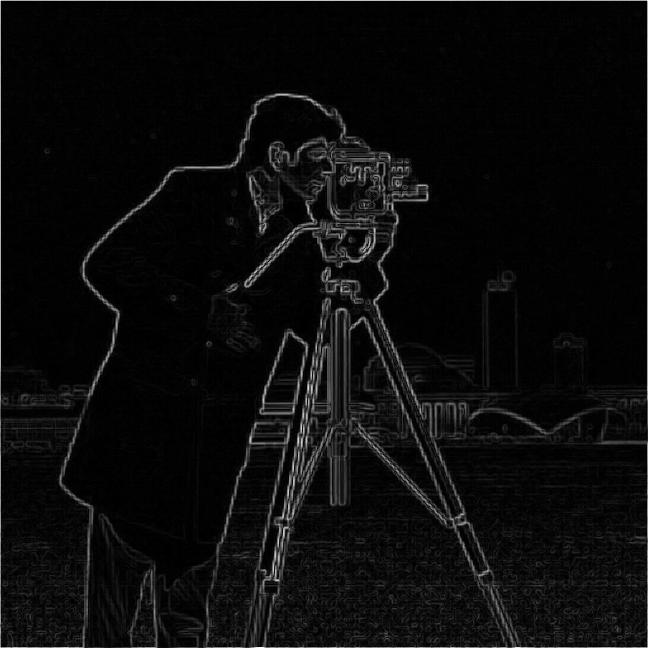
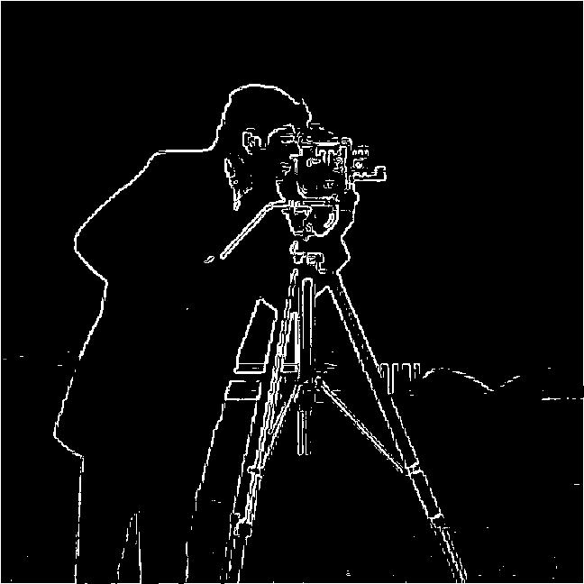
Part 1.3: Derivative of Gaussian (DoG) Filter
To eliminate high-frequency noise prior to differentiation, the image is convolved with a 2D Gaussian kernel (\(k = 25, \sigma = 3.0\)). I compared two mathematically equivalent approaches:
- Method 1 (Two-Step): Blur image with Gaussian \(G_\sigma\), then apply finite differences \(D_x, D_y\).
- Method 2 (Single-Step DoG): Pre-derive Derivative of Gaussian filters (\(DoG_x = G_\sigma * D_x\)) and convolve directly with the raw image.
By the associativity of convolution, both methods produce identical outputs (max absolute difference: 0.00e+00). Pre-computing DoG kernels significantly improves computational efficiency by requiring only a single convolution pass.
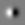
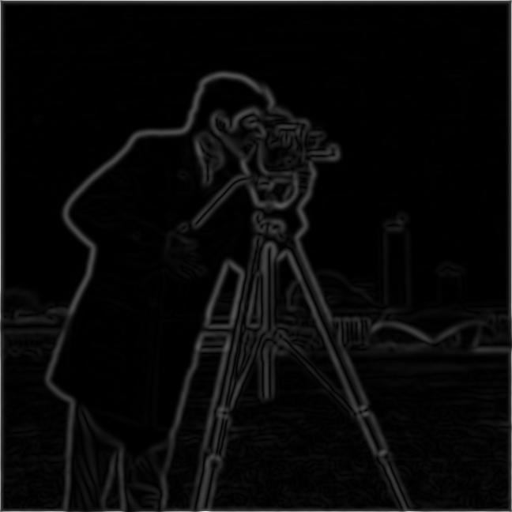
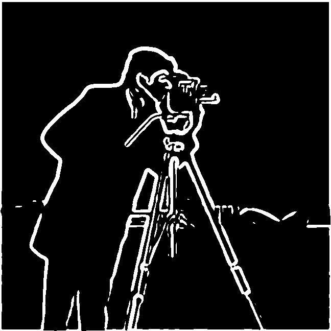
Part 1.4 (Bells & Whistles): Image Orientation Field
Beyond scalar edge magnitudes, the direction of local intensity gradients provides structural orientation information:
$$\theta = \text{atan2}(I_y, I_x), \quad \theta \in [-\pi, \pi]$$
To construct a continuous orientation map, I mapped the angle \(\theta\) to HSV color space:
- Hue (\(H\)): Normalized angle \(\frac{\theta + \pi}{2\pi} \in [0, 1]\) (edge orientation dictates color).
- Saturation (\(S\)): Fixed at \(1.0\).
- Value (\(V\)): Scaled by normalized gradient magnitude \(\frac{M}{\max(M)}\) (flat regions remain dark, strong edges glow brightly).
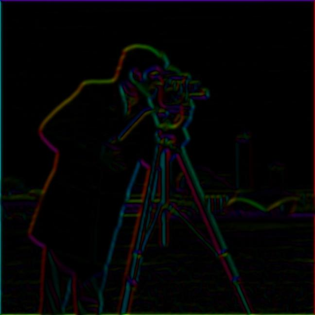
Section 1 Learnings & Insights
- Associativity Efficiency: Pre-deriving Gaussian derivative kernels (\(DoG_x\)) eliminates an entire filtering pass while yielding identical results.
- Noise Control: Differentiation inherently acts as a noise amplifier. Smoothing before differentiating is non-negotiable for clean edge extraction.
Part 2.1: Image Sharpening (Unsharp Masking)
Unsharp masking isolates high spatial frequencies by subtracting a Gaussian-blurred low-pass image (\(G_\sigma * I\)) from the original image \(I\). Amplifying these high frequencies sharpens subtle edge details:
$$I_{\text{sharp}} = I + \alpha (I - G_\sigma * I) = (1 + \alpha)I - \alpha (G_\sigma * I)$$
Standard Architectural Sharpening
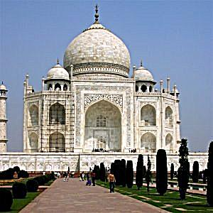
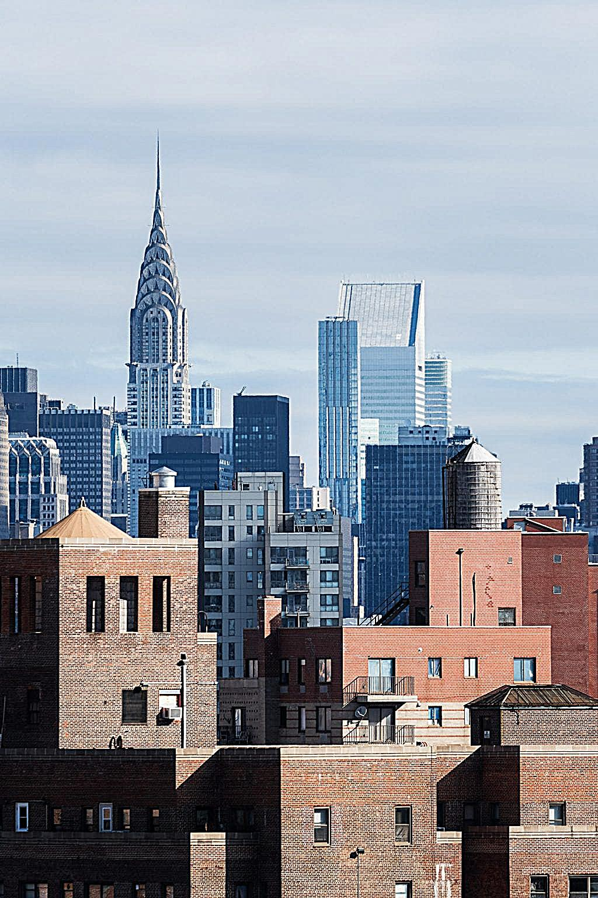
Evaluation Experiment: Blurring & Resharpening
To test the limits of unsharp masking, an image was blurred using an 11x11 Gaussian kernel (\(\sigma = 2.5\)) to destroy high-frequency details, then resharpened with \(\alpha = 2.5\):
Section 2.1 Learnings & Flaws
- The Resharpening Limit: Spatial blurring permanently destroys true high-frequency information. Resharpening cannot restore lost details; it only boosts contrast around remaining mid-frequency boundaries, eventually introducing edge halos.
Part 2.2: Hybrid Images
A hybrid image combines the low spatial frequencies of image \(A\) (\(G_{\sigma_1} * I_A\)) with the high spatial frequencies of image \(B\) (\(I_B - G_{\sigma_2} * I_B\)). Up close, high-frequency details dominate human visual perception; from a distance, low-frequency structural shapes emerge.
Primary Hybrid: Derek & Nutmeg
Cutoff parameters: Low-pass Derek (\(\sigma_1 = 12.0\)), High-pass Nutmeg (\(\sigma_2 = 5.0\)).


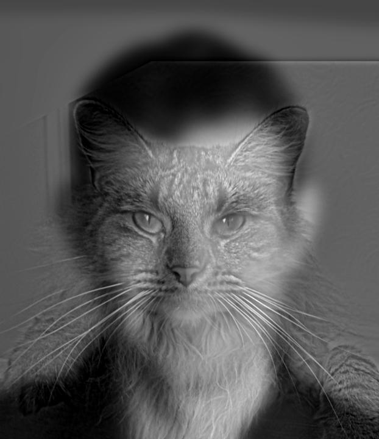
Frequency Domain (2D FFT Log-Magnitude) Analysis
Below are the 2D Fourier Transform log-magnitude spectra across each stage of the hybrid pipeline for Derek and Nutmeg:
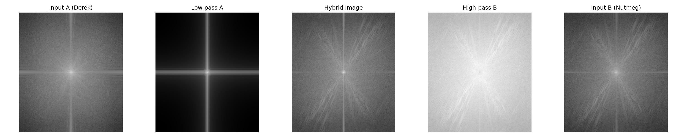
Secondary Hybrid: Obama & Trump
Cutoff parameters: Low-pass Obama (\(\sigma_1 = 5.0\)), High-pass Trump (\(\sigma_2 = 3.5\)).
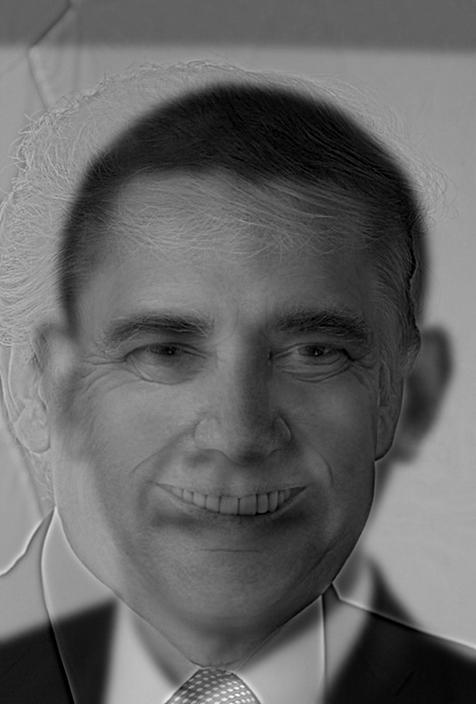
Secondary Hybrid: Tiger & Dog
Cutoff parameters: Low-pass Tiger (\(\sigma_1 = 1.0\)), High-pass Dog (\(\sigma_2 = 20.0\)).
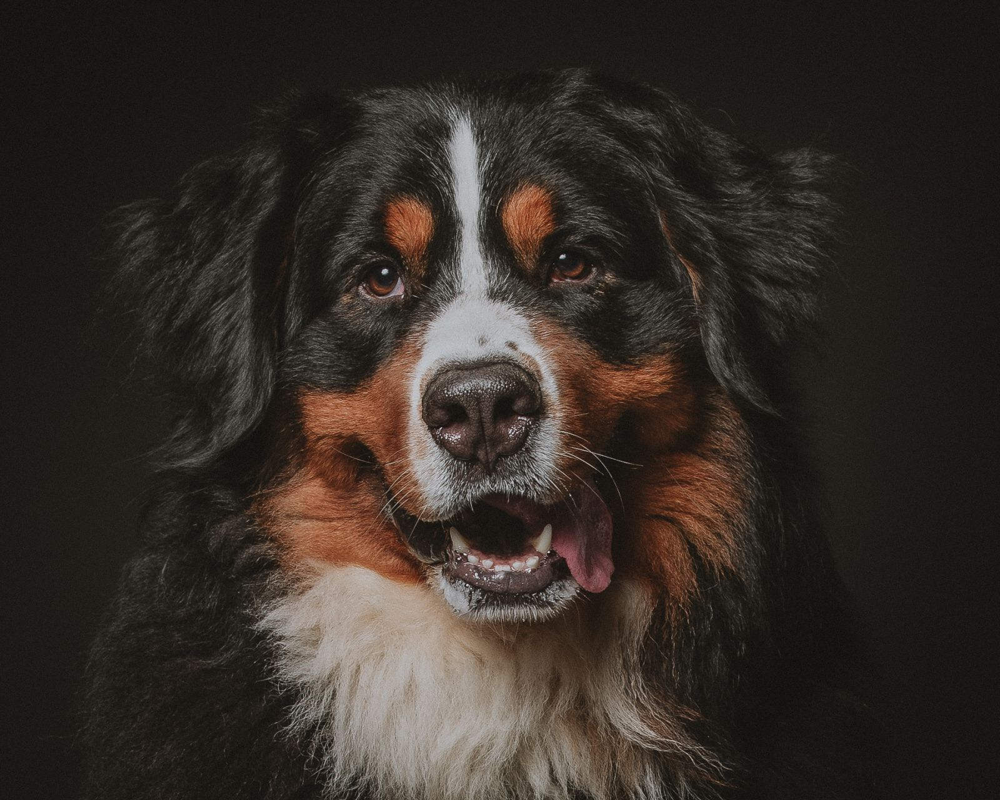
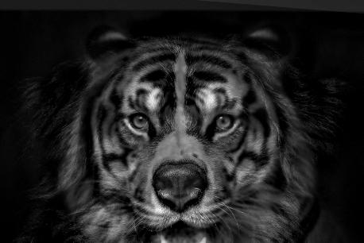
Section 2.2 Learnings & Flaws
- Alignment Sensitivity: Eye and pupil alignment are non-negotiable. Misalignment causes severe high-frequency facial ghosting.
- Cross-Species Geometric Flaws: Mismatched skull/snout geometries (e.g., Tiger vs. Dog) cause high-frequency lines to spill outside the low-frequency body silhouette, breaking the distance perception.
Part 2.3: Multiresolution Spline Blending & The Oraple
Decomposing images into Laplacian stacks (\(L_k\)) allows blending each frequency band independently using a Gaussian mask stack (\(G_{M, k}\)), eliminating seam boundary artifacts.
$$L_{C, k} = G_{M, k} \cdot L_{A, k} + (1 - G_{M, k}) \cdot L_{B, k}$$
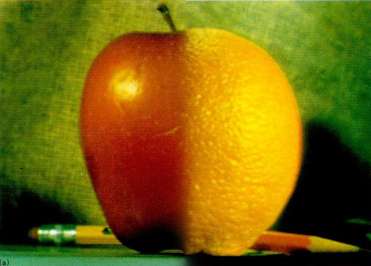
3-Column Laplacian Stack Visualization
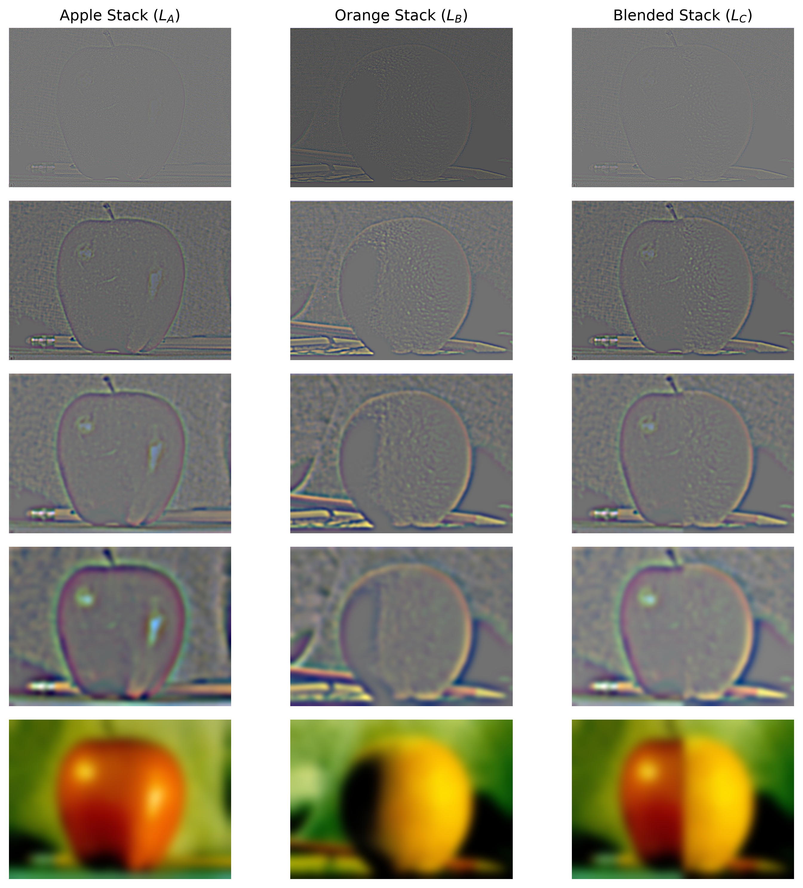
Section 2.3 Learnings
- Scale-Proportional Masking: Blurring the transition mask proportionally at each level ensures high frequencies transition sharply while low frequencies blend smoothly over wider spatial distances.
Part 2.4: Custom RGB Emblem Blend
Custom multiresolution blend combining Batman and Superman logos across independent 3-channel RGB color stacks with automated bounding-box vertex alignment.
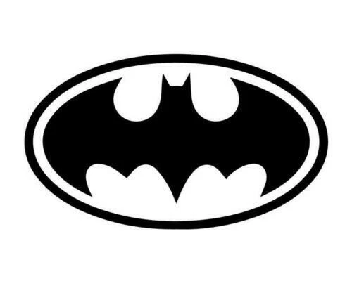
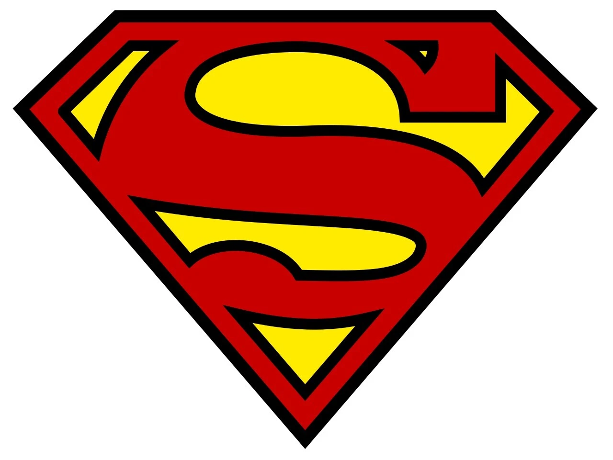
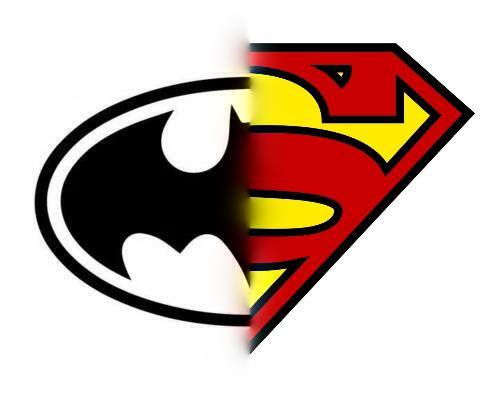
Section 2.4 Learnings
- Multi-Channel Consistency: Processing RGB channels independently prevents color bleeding and maintains brand hue saturation across seams.
Summary Takeaway & Final Thoughts
A high-level recap of spatial filtering principles and perceptual vision mechanics.
Working with spatial frequencies illustrates how human visual perception decomposes raw light signals into scale-dependent channels. Through this assignment, four overarching insights emerged:
- Computational Efficiency via Associativity: Mathematically combining linear operations (like DoG filtering) saves computation without sacrificing numerical precision.
- Information Permanence: Linear operations can reweight frequency bands, but once spatial details are destroyed via low-pass blurring, unsharp masking cannot reconstruct them out of thin air.
- Distance-Dependent Human Vision: Hybrid images demonstrate that fine details dominate high visual acuity (close range), while broad illumination patterns dominate low visual acuity (distance).
- Seamless Blending via Multiresolution Stacks: Eliminating visible seams in Laplacian stack blending depends on scale-aware masks: sharp high frequencies blend over narrow boundaries, while broad low frequencies transition smoothly across wider regions.